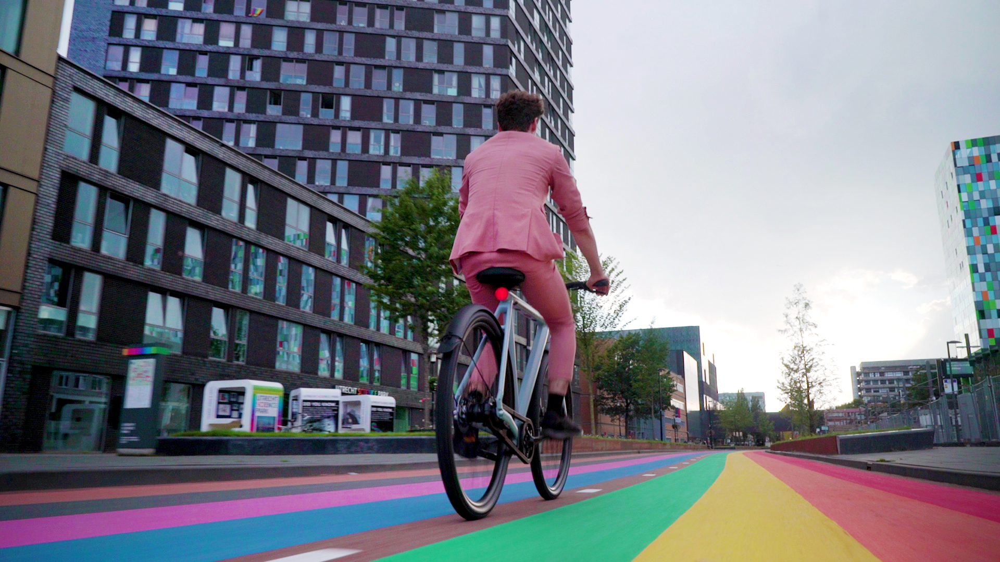
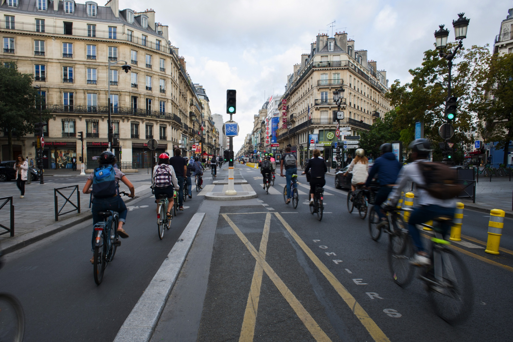
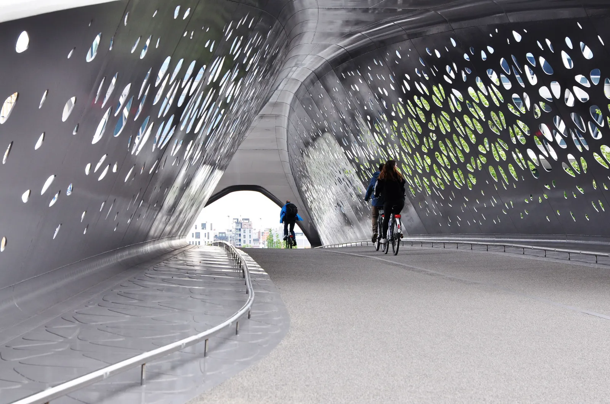

This is the longest rainbow bike path in the world, located at Utrecht University in the Netherlands. Elias van Mourik (shown above) said in an interview, "The world can sometimes be a scary place, so we might as well paint it in beautiful colors to make it less scary".

A section of Rue de Rivoli that has recently been reserved permanently for bicyclists and busses. In the last few years, Paris has been rapidly redeveloping roads into bike-safe paths.

The Park Bridge, or as they call it in Antwerp, Belgium, Parkburg, is an architectural and structural masterpiece. This bridge looks more like an art installation, but holds a major function of crossing an intersection of two high-capacity roads and a tram line.